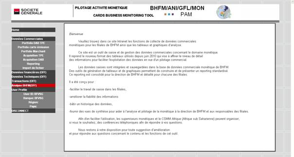

Tables des matières Fermer la fenêtre

Le menu dans la colonne de gauche propose les fonctions et domaines suivants :
Données commerciales :
Portfolio DAB TPE : données concernant le parc de DAB et de TPE.
Portfolio cartes émission : données concernant le parc des cartes
Portfolio Marchant : données concernant le portefeuille de contrats commerçants
Acquisition TPE : données concernant les flux de transactions sur TEP
Acquisition DAB : données concernant les flux de transactions sur DAB
Reporting : ensemble de rapports disponibles sur les données monétiques
Import de fichier : fonction d’importation de fichiers CSV pour la mise à jour des données
Données financières (OFF) : recueil et présentation de données financières - en cours de définition - disponible dans une version ultérieure.
Données techniques (OFF) : présentation de données techniques du parc de DAB - en cours de définition - disponible dans une version ultérieure.
Transactions (OFF) : analyse des flux de transactions par type - en cours de définition - disponible dans une version ultérieure.
Analyse BHFM (OFF) : en cours de définition - disponible dans une version ultérieure.
User profile : profil de l’utilisateur en cours donnant l’identifiant, le sigle de la banque, la région et le pays.
DISCONNECT : Fermeture de la session de travail et déconnection de l’application.